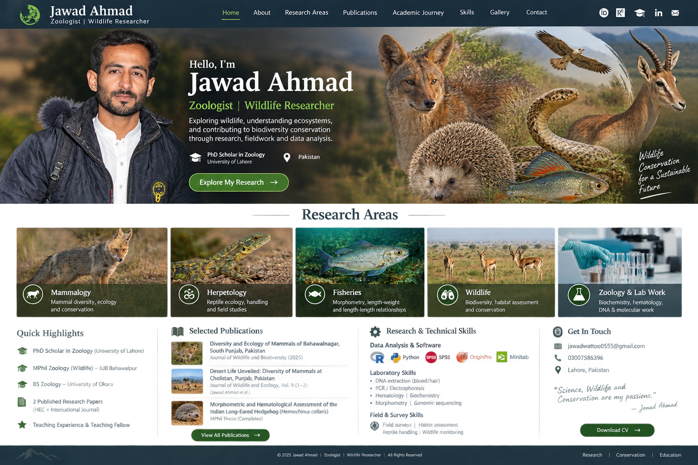

Exploring wildlife, understanding ecosystems, and contributing to biodiversity conservation through research, fieldwork and data analysis.
Explore My Research →Contact MeMammal diversity, ecology and conservation.
Reptile ecology, handling and field studies.
Morphometry, length–weight and length–length relationships.
Biodiversity, habitat assessment and conservation.
Biochemistry, hematology, DNA and molecular work.
I am a Zoology and Wildlife researcher with an MPhil in Zoology (Wildlife) and currently a PhD Scholar in Zoology at the University of Lahore.
My research experience includes mammalian biodiversity, wildlife field surveys, morphometry, hematology, biochemistry, indigenous fish morphometric relationships, and quantitative data analysis using R.
I aim to connect field biology, laboratory investigation and reproducible statistical analysis to support wildlife research and conservation.
Statistical analysis, visualization, correlation, regression and research-data workflows using R.
Wildlife surveys, biodiversity documentation, habitat assessment, morphometry and field observations.
Hematology, biochemistry parameters, DNA extraction, PCR and electrophoresis.
R, SPSS, OriginPro and Minitab for quantitative research and visualization.
Biology and Zoology teaching experience, including biodiversity and practical biological sciences.
Wildlife diversity, ecological assessment and conservation-oriented research.

Actual Mammalogy, Herpetology, Fisheries and Wildlife field photographs can be added here as you provide them.
Jawad Ahmad
PhD Scholar in Zoology · University of Lahore · Pakistan
📧 jawadwattoo0555@gmail.com
📞 +92 300 7586396
Research collaboration · PhD opportunities · Wildlife & Zoology research